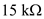
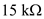
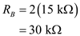

Step 1:
(a)
Refer to the Figure 16.24 (b) in the text book.
Consider the following condition.
Write the overall transfer function of the KHN biquad filter.
Substitute 1 for and for  .
.
…… (1)
From equation (1), it is clear that the transfer function shows that the filter is an all pass filter.
Therefore, the all pass filter transfer function can be realized using condition.
Step 2:
From equation (1) it is clear that, the Flat band gain is .
Therefore, the Flat gain is shown.
Step 3:
(b)
Assume the value of capacitance is, 10 nF.
Determine the value of resistance.
Substitute  for
for  and 10 nF for C.
and 10 nF for C.
Step 4:
Assume the following resistor values.
Determine the value of resistor .
.

Substitute 1 for  and
and  for
for .
.
Therefore, the design parameters of KHN biquad filter are.
Step 5:
Determine the value of
K.
Substitute 2 for .
.
Determine the value of flat gain of the filter.
Substitute 1.5 for K.


Step 6:
Assume the value of feedback resistor is,
Determine the value of resistor .
.
Substitute  for
for .
.
Determine the value of resistance .
.
Substitute 2 for  and  for.
and  for.

Therefore, the design parameters of summing amplifier are.
Step 7:
The design of all-pass filter circuit is shown in Figure 1.
Thus, the designed circuit is shown in Figure 1.